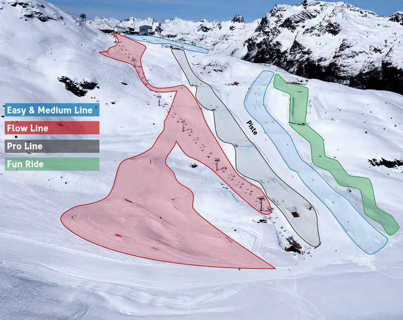

Le ski freestyle consiste à descendre une pente parcemé de bosses et barre de fer appelé "rails" tout en faisant des figures. C'est une dicsipline olympique depuis 2014. Cela se pratique dans un snowpark, dans un snowpark on peut retrouvé plusieurs ligne avec des niveau différent.
